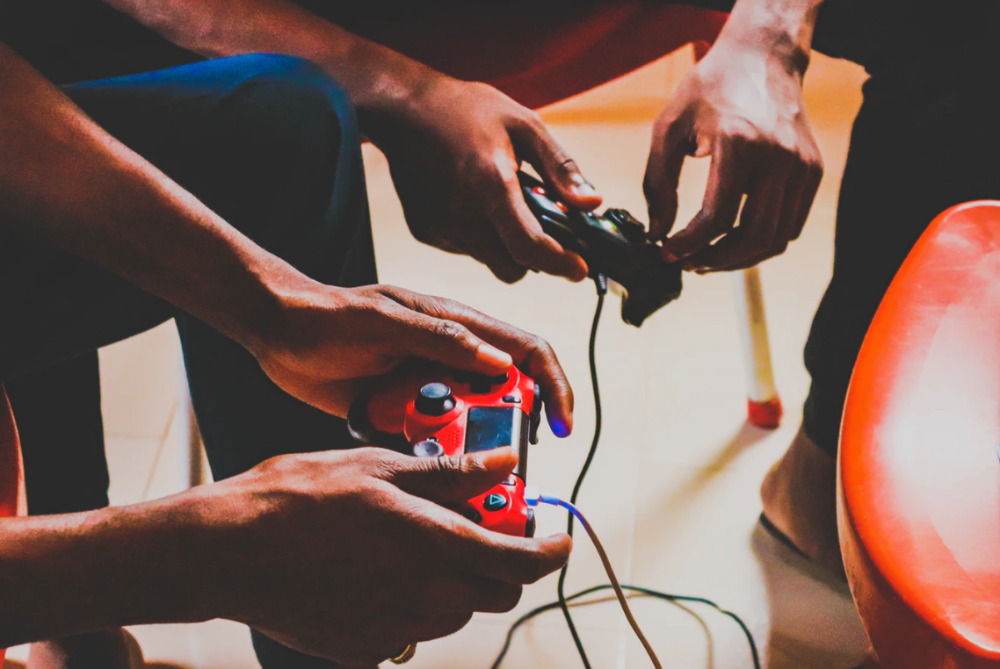

PS4
PlayStation Store vous permet d’accéder à vos jeux préférés. Depuis les titres AAA jusqu’aux jeux indépendants, PlayStation™Store contient une bibliothèque de jeux, de films et d'émissions télévisées qui ne cesse de croître. Tout le divertissement. Toutes les aventures. Toujours ouvert. Partagez des captures d'écran et des vidéos de vos moments préférés sur Facebook, Twitter, YouTube, etc. - source : playstation
Contrôlez votre PS4, utilisez les codes de vos bons, gérez le téléchargement de vos jeux PS4 à distance, envoyez des messages à vos amis et plus encore depuis votre iPhone, iPad, téléphone Android ou tablette Android. Diffusez votre partie en direct et regardez les diffusions en direct d'autres joueurs à l'échelle internationale. - source : playstation

Partagez votre partie sur PS4 en temps réel, permettant ainsi à un ami de se joindre à la partie ou même de prendre le contrôle du jeu depuis son propre système PS4 (PlayStation Plus requis).Diffusez votre partie en direct et regardez les diffusions en direct d'autres joueurs à l'échelle internationale. - source : playstation
Voyez les plus récentes activités de vos amis, créez des Groupes avec la fonctionnalité de clavardage vocal pour les jeux multijoueurs et joignez-vous aux Communautés de vos jeux préférés afin de trouver de nouveaux amis avec qui jouer. - source : playstation
what do yu think about my blog ?